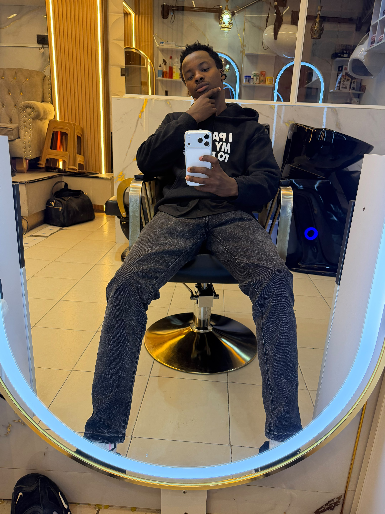

I'm an IT Expert with a passion for solving real-world problems through technology. My journey began with curiosity and evolved into a career filled with innovation, collaboration, and continuous learning.
Over the years, I've worked with startups, enterprises, and freelance clients to build secure, scalable systems. From cloud-native applications to network architecture, I thrive on turning complex challenges into elegant solutions.
I believe technology should empower people. Whether I'm mentoring junior developers, speaking at tech events, or optimizing infrastructure, my goal is to make tech more human-centered and impactful.
I specialize in full-stack development and cybersecurity. I'm also a lifelong learner who enjoys exploring new frameworks, contributing to open-source, and staying ahead of industry trends.

I'm John, an IT Expert driven by a relentless curiosity for how technology shapes our world. With over a decade of hands-on experience, I've navigated the evolving landscape of software engineering, cybersecurity, and network architecture.
Beyond the code, I'm a lifelong learner. I believe that tech isn't just about efficiency—it's about empowerment. Whether I'm optimizing infrastructure or crafting intuitive user experiences, I aim to make technology accessible, scalable, and impactful.
Ever since I first discovered the power of technology, I've carried a dream deep within me—to create a game that transcends borders, cultures, and languages. Not just any game, but one that touches hearts, sparks joy, and becomes a source of connection for people around the world.
My mission is to bridge the gap between innovation and implementation. I help businesses and individuals harness the power of digital transformation through tailored solutions—from automating workflows to building secure, cloud-native applications. Every challenge is an opportunity to create something smarter, faster, and more human-centered.
HTML is the backbone of every webpage I build. I use semantic tags to structure content clearly and accessibly, ensuring that my sites are both user-friendly and SEO-optimized.
From forms to multimedia integration, I understand how to leverage HTML5 features to create dynamic and interactive experiences. My markup is clean, well-organized, and scalable.
Whether I'm building landing pages or complex web apps, HTML is where I start. I treat it like the blueprint of every digital experience I craft.
CSS is where I bring design to life. I specialize in responsive layouts, animations, and modern styling techniques using Flexbox, Grid, and media queries.
My stylesheets are modular and maintainable. I use variables, custom properties, and preprocessors when needed to keep things clean and scalable.
From sleek gradients to interactive hover effects, I use CSS to make interfaces not just functional—but delightful.
JavaScript is my tool for interactivity and logic. I use it to build dynamic interfaces, handle user input, and create seamless experiences across devices.
Whether it's DOM manipulation, API integration, or building components, I write clean, efficient, and modular JavaScript code.
I also work with frameworks like React and vanilla JS to create scalable applications that respond to real-time data and user behavior.
I have solid hands-on experience in network design, configuration, and troubleshooting. I’m comfortable working with routers, switches, firewalls, and wireless controllers.
I understand TCP/IP, DNS, DHCP, VLANs, routing protocols (OSPF, EIGRP), and network security fundamentals. I also monitor network performance and ensure uptime.
I have comprehensive mastery of computer packages including Microsoft Office (Word, Excel, PowerPoint, Access, Publisher), Google Workspace (Docs, Sheets, Slides, Forms, Drive), and basic accounting packages.
I use these tools daily for documentation, data analysis, presentations, and collaborative projects. I also train others on effective use of these packages.
I am experienced in computer management, including hardware diagnostics, OS installation (Windows, Linux), software deployment, user account management, and system optimization.
I ensure systems are secure, updated, and running efficiently. I also handle backup strategies, disk management, and basic server administration.
I leverage Google tools extensively for productivity, collaboration, and data management. This includes Google Drive, Docs, Sheets, Slides, Forms, Gmail, Calendar, and Google Meet.
I use Google Sheets for data analysis and automation (App Script basics), and Google Forms for surveys and data collection. I also manage Google Workspace administration.
I am highly proficient in data entry with exceptional speed and accuracy. I handle large volumes of data, perform validation, and ensure data integrity across various platforms.
I use tools like Excel, Google Sheets, and specialized data entry software. I also have experience in data cleaning, formatting, and migration.
A timeline of my academic achievements and learning path.
Completed primary education at Joyspring Academy and Umoja Academy, developing literacy, numeracy, and leadership skills.
Attended Njoro Boys High School, where I enhanced academic performance and leadership through extracurricular activities.
Completed a 12-month program in Web Design and Programming, specializing in front-end development and networking.
Completed an intensive course on cybersecurity principles, penetration testing, and network defense.
If you'd like to get in touch, feel free to reach out using the form below.